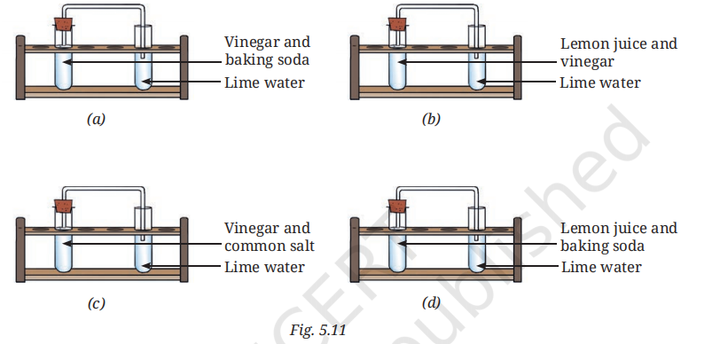

SCIENCE CLASS- 7
CHAPTER-5 (Changes Around Us – Physical and Chemical)
Let Us Enhance Our Learning
1. Which of the following statements are the characteristics of a physical change?
Answer: (c) (i) and (iii)
In a physical change, the state of a substance may or may not change, but no new substance is formed.
2. Predict which of the following changes can be reversed and which cannot be reversed.
(i) Stitching cloth to a shirt: Cannot be reversed easily
(ii) Twisting of straight string: Reversible
(iii) Making idlis from a batter: Cannot be reversed
(iv) Dissolving sugar in water: Reversible (by evaporation)
(v) Drawing water from a well: Reversible
(vi) Ripening of fruits: Cannot be reversed
(vii) Boiling water in an open pan: Reversible (water vapour can condense back)
(viii) Rolling up a mat: Reversible
(ix) Grinding wheat grains to flour: Cannot be reversed
(x) Forming of soil from rocks: Cannot be reversed
3. State whether the following statements are True or False. In case a statement is False, write the correct statement.
(i) Melting of wax is necessary for burning a candle.
Answer: True
(ii) Collecting water vapour by condensing involves a chemical change.
Answer: False
Correct Statement: Collecting water vapour by condensation is a physical change.
(iii) The process of converting leaves into compost is a chemical change.
Answer: True
(iv) Mixing baking soda with lemon juice is a chemical change.
Answer: True
4. Fill in the blanks.
(i) Nalini observed that the handle of her cycle has got brown deposits. The brown deposits are due to rusting, and this is a chemical change.
(ii) Folding a handkerchief is a physical change and can be reversed.
(iii) A chemical process in which a substance reacts with oxygen with evolution of heat is called combustion, and this is a chemical change.
(iv) Magnesium, when burnt in air, produces a substance called magnesium oxide. The substance formed is basic in nature. Burning of magnesium is a chemical change.
5. Are the changes of water to ice and water to steam physical or chemical? Explain.
Answer:
Both changes are physical changes. In these processes, only the state of water changes. No new substance is formed. Ice, water, and steam are all forms of the same substance, water.
6. Is curdling of milk a physical or chemical change? Justify your statement.
Answer:
Curdling of milk is a chemical change because a new substance, curd, is formed. The properties of curd are different from those of milk, and the original milk cannot be obtained back easily.
7. Natural factors, such as wind, rain, etc., help in the formation of soil from rocks. Is this change physical or chemical and why?
Answer:
The formation of soil from rocks involves both physical and chemical changes. Rocks break into smaller pieces due to wind, water, and temperature changes (physical change). Some minerals in rocks also react with air and water, forming new substances (chemical change).
8. Read the story titled ‘Eco-friendly Prithvi’ and tick the correct option.
Suggested Title: Prithvi’s Green Garden
Chopping vegetables, peeling potatoes, and cutting fruits: Physical changes
Collecting seeds, fruits, and vegetable peels into a clay pot: Physical change
Formation of compost due to decomposition: Chemical change
Germination of seeds and growth of plants into flowers: Chemical change
9. Classify the following changes.
A (Physical Changes):
- Tearing of paper
- Melting of ice
- Folding of clothes
B (Chemical Changes):
- Rusting
- Curdling of milk
- Ripening of fruits
- Burning of magnesium
- Mixing baking soda with vinegar
C (Both Physical and Chemical Changes):
- Process of burning a candle
10. The experiments shown in Fig. 5.11 (a), (b), (c), and (d) were performed. Find out in which case(s) did lime water turn milky and why?

Image Source- NCERT
Answer:
Lime water turns milky in Fig. 5.11 (a) and Fig. 5.11 (d).
In these cases, baking soda reacts with vinegar or lemon juice to produce carbon dioxide gas. When carbon dioxide passes through lime water, it forms calcium carbonate, which turns the lime water milky.
Fig. 5.11 (b) and Fig. 5.11 (c) do not produce carbon dioxide gas; therefore, the lime water does not turn milky.